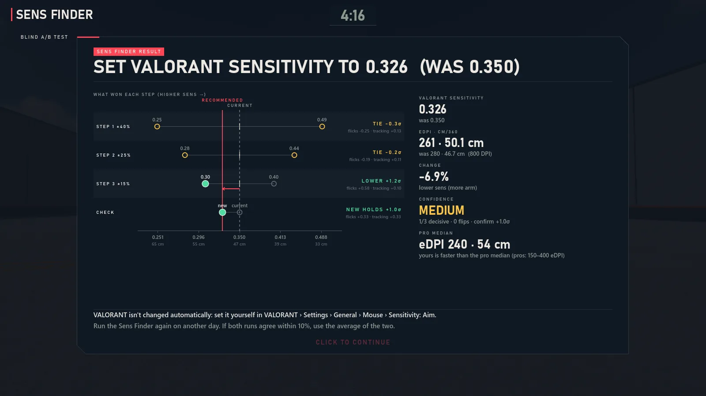

ValTrainer · Sens Finder
Find your VALORANT sensitivity with a blind A/B test
Most sens advice is "copy a pro" or "pick what feels good". ValTrainer's Sens Finder measures instead: you play short rounds at two hidden sensitivities, it scores how well you aim at each, and it narrows down to the one you actually perform best with. Free, in ValTrainer for Windows.

How it works
- It starts from your sens. ValTrainer reads your current VALORANT sensitivity and DPI, and uses VALORANT's exact math, so 1 cm on your mousepad turns you exactly as far as in the game.
- Two hidden settings, A and B. Each step tests a lower and a higher sens around the current best guess. You don't know which is which, so "feel" can't bias the result.
- Short rounds that test real aim. Each round has head flicks (small, medium and large, 3–45°), micro-adjustments (tiny heads 0.6–3° off your crosshair) and 10 seconds of tracking a strafing target. The rounds run in an A-B-B-A order, so warming up or getting tired doesn't favour either side.
- It scores, then narrows. Flick speed for the distance, how cleanly you settle on small targets and time on target are combined into one score. If one side clearly wins, the next step moves toward it with a smaller gap (±40%, then 25%, 15%, 9% and 5%). A close result counts as a tie.
- A final check. The winner is tested blind against your current sens. You only get a change if it holds up; otherwise you get a value between the two.
What you get
- A VALORANT sensitivity to type into the game, with the value it replaces.
- eDPI and cm/360, so you can compare with any other game or player.
- Per-skill notes when they differ, for example "micro-adjustments cleaner at the lower sens, flicks faster at the higher one".
- An option to use the new sens in ValTrainer right away. It never changes VALORANT: you set it yourself.
Full test or short test
The full test takes about 16 minutes: 5 steps of 4 rounds, then the final check. The short test (press Q on its start screen) takes about 8: 3 steps with lighter rounds. Same blind rounds, slightly wider margin. You can skip the micro-adjustment part with M.
Tips: warm up for a few minutes first, use your usual mousepad, chair and DPI, and don't try to guess which setting is which. Just aim as well as you can.
Why a blind test beats copying a pro
Pros use a wide range of sensitivities, and what works for their arm, desk and play style may not work for yours. People are also bad at judging small sens differences by feel: a new sens often feels better for a day simply because it's different. Testing blind, with a score, removes both problems. The method is a performance-scored version of the classic "PSA" sensitivity method: start wide, then halve the gap.
The Sens Finder is one part of ValTrainer, a free aim trainer for VALORANT players that imports your sensitivity, crosshair and keybinds and has an aim coach and 30+ drills. There is also a Crosshair Finder that gives you a VALORANT crosshair code.
Questions
What is a good VALORANT sensitivity?
There is no single right number. Many VALORANT players use somewhere around 25–60 cm per 360°. The best one for you is the one you aim best with, which is what the Sens Finder measures.
Does the Sens Finder change my VALORANT settings?
No. ValTrainer only reads VALORANT's settings files. It shows you the new value and you type it into VALORANT yourself.
How long does it take?
About 16 minutes for the full test, or about 8 for the short test (press Q on the start screen).
What are eDPI and cm/360?
eDPI is your mouse DPI times your in-game sensitivity. cm/360 is how far you move the mouse to turn around once. Both let you compare sensitivities across DPI settings and games.
Is it free?
Yes. ValTrainer is free and open source (GPL-3.0), with no account and no ads.
Get ValTrainer
Free, open source, no account. Windows 10 and 11.
Download for Windows Install help
Or in a terminal: winget install Valtrainer.ValTrainer · Also on
itch.io · Questions? Discord